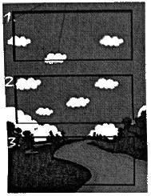
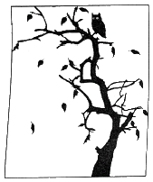
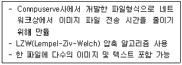

멀티미디어콘텐츠제작전문가 (2021-03-07 기출문제)
1과목: 멀티미디어개론
1. 사물통신 사물 인터넷과 같이 대역폭이 제한된 통신 환경에 최적화하여 개발된 푸시 기술 기반의 경량 메시지 전송 프로토콜은?
- MICS
- MTBF
- HTTP
- MQTT
(정답률: 72%)

2. 한정된 하나의 공인 IP를 여러개의 내부 사설 IP로 변환하여 공인 IP를 절약하고, 외부 침입에 대한 보안성을 높이기 위한 기술은?
- NAT
- ARP
- SMTP
- SNMP
(정답률: 67%)
3. Hypertext의 대표적인 구성요소가 아닌 것은?
- 노드(node)
- 앵커(achor)
- 링크(link)
- 해상도(resolution)
(정답률: 81%)
4. UDP 프로토콜에 대한 설명으로 틀린 것은?
- 신뢰성 있는 데이터 전송 보장
- 비연결형 데이터 전달 서비스 제공
- UDP 데이터글매의 순서가 변경될 수 있음
- 오류제어와 흐름제어를 하지 않음
(정답률: 62%)
5. 대칭키 암호 시스템이 아닌 것은?
- DES
- RSA
- SEED
- IDEA
(정답률: 69%)
6. IPv6에 대한 설명으로 거리가 먼 것은?
- IPv6 주소는 64비트, IPv4 주소는 32비트 길이이다.
- IPv6는 옵션들이 기본헤더로부터 분리된다.
- IPv6는 부가적 기능을 허용하는 새로운 옵션을 가진다.
- IPv6는 프로토콜의 확장을 허용하도록 설계되었다.
(정답률: 79%)
7. 큐에 있는 프로세스 중 실행 시간이 가장 짧은 프로세스에게 먼저 CPU를 할당하는 스케줄링 기법은?
- SJF
- HRN
- FCFS
- ROUND ROBIN
(정답률: 62%)
8. 지향성 마이크를 음원 가까이에 배치하면 마이크의 낮은 음역 주파수 특성이 상승하는 효과는?
- 회절효과
- 왜곡효과
- 근접효과
- 반사효과
(정답률: 87%)
9. OSI-7 계층에서 인접한 두 노드를 이어주는 전송링크 상에서 패킷을 안전하게 전송하는 것을 목적으로 하는 계층은?
- 응용 계층
- 프리젠테이션 계층
- 데이터링크 계층
- 물리 계층
(정답률: 78%)
10. 미국 버클리대학에서 개발한 센서 네트워크를 위해 디자인된 컴포넌트 기반 내장형 운영체제로 이벤트 기반 멀티태스킹을 지원하는 것은?
- Tiny OS
- NES C
- Net OS
- OS2
(정답률: 71%)
11. 입출력 처리 기본 단위가 128비트인 국내의 표준 대칭키 알고리즘으로 1999년 TTA(한국정보통신기술협회)에서 표준으로 제정한 블록 암호 알고리즘은?
- SEED
- HAS-160
- KCDSA
- DSS
(정답률: 73%)
12. IP 멀티캐스트와 같은 비신뢰성 데이터그램 서비스를 기반으로 논리적 링의 형태로 제어구조를 만들어 패킷의 도착 순서를 그룹 전체에 일치시킬 수 있도록 해주고 전송 신뢰성을 제공해주는 프로토콜은?
- VTSP
- RMP
- CRTP
- MCP
(정답률: 58%)
13. 리눅스 운영체제에서 입력받은 명령어를 실행하는 명령어 해석기는?
- Register
- Commit
- Shell
- Interface
(정답률: 77%)
14. DNS 스푸핑을 이용하여 공격대상의 신용정보 및 금융정보를 획득하는 사회공학적 해킹 방법은?
- 프레임 어택
- 디도스
- 파밍
- 백도어
(정답률: 74%)
15. 해커의 분류에 있어서 최고 단계의 해커로 스스로 새로운 취약점을 발견하고, 이에 대한 해킹 코드를 스스로 작성할 수 있는 해커 레벨은?
- Netbie
- Kids
- Nemesis
- Scripter
(정답률: 78%)
16. 다음 중 보안의 3대 요소에 해당하지 않는 것은?
- 기밀성
- 무결성
- 가용성
- 휘발성
(정답률: 81%)
17. 흑백 및 컬러 정지화상을 위한 국제 표준안으로 이미지의 압축 및 복원 방식에 관한 표준안은?
- JPEG
- BMP
- GIF
- TIFF
(정답률: 85%)
18. 운영체제에서 PCB(Process Control Block)가 갖고 있는 정보가 아닌 것은?
- 프로세스의 현재 상태
- 프로세스 고유 식별자
- 할당되지 않은 주변장치의 상태 정보
- 스케쥴링 및 프로세스의 우선순위
(정답률: 76%)
19. 운영체제의 성능 평가 요소로 거리가 먼 것은?
- 반환 시간
- 처리 능력
- 비용
- 신뢰도
(정답률: 84%)
20. PEM(Privacy Enhanced Mail)에 대한 설명으로 틀린 것은?
- IETF에서 인터넷 표준안으로 채택
- 높은 보안성을 지원
- 구현의 복잡성으로 널리 사용되지 않음
- 미국 RSA 데이터시큐리티사에서 개발
(정답률: 56%)
2과목: 멀티미디어기획및디자인
21. 둘 이상의 색을 시간적인 차이를 두고서 차례로 볼 때 주로 일어나는 색채대비는?
- 연변대비
- 병치대비
- 계시대비
- 동화대비
(정답률: 68%)
22. 색삼각형의 연속된 선상에 위치한 색들을 조합하면 관련된 시각적 요소가 포함되어 있기 때문에 서로 조화한다는 원리는?
- 비렌의 색체조화론
- 루드의 색체조화론
- 이텐의 색체조화론
- 문-스펜서의 색체조화론
(정답률: 66%)
23. 웹 콘텐츠 제작 시 이미지 파일이나 애니메이션 파일 용량을 줄일 수 있도록 256가지 이하의 색상으로 이미지를 표현하는 모드는?
- CMYK
- JPG
- Indexed color
- RGB
(정답률: 65%)
24. 브레인스토밍에 대한 설명으로 옳은 것은?
- 아이디어의 양보다는 질을 중시한다.
- 민주적인 형식으로 자유롭게 아이디어를 제시할 수 있다.
- 구성원들이 제한된 범위에서만 의견을 개진할 수 잇다.
- 다른 사람의 아이디어를 비판하여 새로운 아이디어을 도출시킨다.
(정답률: 79%)
25. 다음 중 콘텐츠 제작과정이 아닌 것은?
- 프로덕션(Production)
- 프리 프로덕션(Pre-Production)
- 포스트 프로덕션(Post-Production)
- 애프터 프로덕션(After-Production)
(정답률: 74%)
26. 다음 중 마케팅 커뮤니케이션의 기능에 포함되지 않는 것은?
- 정보기능
- 제시기능
- 조정기능
- 구조기능
(정답률: 73%)
27. 이미지의 구성요소인 픽셀(pixel)에 대한 설명으로 틀린 것은?
- 픽쳐(Picture)와 구성요소(Element)의 복합어이다.
- 픽셀은 더 이상 부분으로 나눌 수 없는 개체이다.
- 픽셀은 디지털 이미지의 최소 단위이다.
- 픽셀은 둘 이상의 값을 갖고 있다.
(정답률: 81%)
28. 타이포그래피(Typography)에 관한 내용으로 틀린 것은?
- 타입(Type)과 그래피(Graphy)의 합성어이다.
- 타이포그래피 요소의 적절한 조화를 통해 시각적 배려와 의미가 담겨야 한다.
- 타입(Type)은 문자 또는 활자의 의미를 갖는다.
- 정보를 시각화하여 전달하는 방법 중에 가장 과학적이고 객관적인 방법으로 메시지를 전달 할 수 있는 디자인 형태이다.
(정답률: 73%)
29. 게슈탈트의 법칙에 해당하지 않는 것은?
- 유사성의 법칙
- 근접성의 법칙
- 복합성의 법칙
- 연속성의 법칙
(정답률: 65%)
30. 마케팅 믹스(marketing mix)의 구성요소가 아닌 것은?
- 제품(Product)
- 가격(Price)
- 촉진(Promotion)
- 서비스(Service)
(정답률: 65%)
31. 인간 생활의 환경적인 부분을 조형적으로 구성하는 활동으로 모든 디자인 분야를 포괄적으로 포함하는 상위개념의 디자인은?
- 시각디자인
- 환경디자인
- 옥외디자인
- 실내디자인
(정답률: 76%)
32. 디지털색채 시스템으로 거리가 가장 먼 것은?
- CMYK
- CRT
- RGB
- LAB
(정답률: 68%)
33. 웹 디자인 과정에서 고려해야 할 사항으로 틀린 것은?
- 클라이언트의 요구와 기획을 바탕으로 한다.
- 웹사이트 목적과 상관없이 최신 유행하는 인터페이스를 적용한다.
- 사이트 맵을 통해 구조를 파악할 수 있도록 한다.
- 기획서와 조사된 자료들을 숙지한 상태에서 디자인한다.
(정답률: 84%)
34. 마케팅에서 자사 제품과 경쟁 제품의 위치를 2차원 공간에 작성한 지도로 경쟁 제품과의 비교분석, 방향성 등에 대한 것을 한눈에 알 수 있는 것은?
- 포지셔닝 맵
- 트랜드 맵
- 셰어 맵
- 시장 세분화
(정답률: 73%)
35. 다음 중 디지털화된 이미지의 기본적 색채 특징이 아닌 것은?
- 해상도(resolution)
- 트루컬러(true color)
- 비트깊이(bit depth)
- 컬러모델(color model)
(정답률: 58%)
36. 다음 중 웹 페이지의 이미지 구성요소가 아닌 것은?
- 로고
- 아이콘
- 메뉴
- 사이트맵
(정답률: 74%)
37. 다음 중 디자인의 기본요소가 아닌 것은?
- 면
- 원
- 입체
- 선
(정답률: 66%)
38. 구성형식에 의한 디자인분류 중 평면디자인(2차원적)에 속하지 않는 것은?
- 일러스트레이션
- 편집디자인
- 포장디자인
- 타이포그래피
(정답률: 78%)
39. “저채도의 약한 색은 면적을 넓게, 고채도의 강한 색은 면적을 좁게 해야 균형이 맞는다.”는 원칙을 정량적으로 이론화한 학자는?
- 슈브뢸(M. E. Chevreul)
- 문·스펜서(P. Moon & D. E. Spencer)
- 오스트발트(W. Ostwald)
- 저드(D. B. Judd)
(정답률: 56%)
40. 붉은 망에 들어간 귤의 색이 본래의 주황보다는 붉은 색을 띠어 보이는 효과는?
- 스푸마토(sfumato) 효과
- 플루트(flute) 효과
- 베졸드(bezold) 효과
- 팬텀 컬러(phantom color) 효과
(정답률: 67%)
3과목: 멀티미디어저작
41. 다음 SQL 명령 중 데이터 정의어(DDL)에 포함 되지 않는 것은?
- DROP
- CREATE
- SELECT
- ALTER
(정답률: 46%)
42. HTML5에서 지정한 문자로 끝나는 속성에 대해서만 스타일을 적용하는 속성 선택자는?
- not
- &&
- $
- ##
(정답률: 66%)
43. 제3정규형에서 보이스코드 정규형(BCNF)으로 정규화 하기 위한 것으로 옳은 것은?
- 원자 값이 아닌 도메인을 분해
- 부분 함수 종속 제거
- 이행 함수 종속 제거
- 결정자가 후보 키가 아닌 함수 종속 제거
(정답률: 57%)
44. HTML5의 select 태크에서 여러 개의 목록을 선택하고 싶을 때 사용하는 속성은?
- color
- multiple
- display
- input
(정답률: 80%)
45. 개념 스키마(conceptual schema)에 대한 설명으로 옳지 않은 것은?
- 데이터베이스의 전체적인 논리적 구조를 말한다.
- 개체 간의 관계와 제약조건을 나타낸다.
- 데이터베이스의 접근 권한, 보안 및 무결성 규칙에 관한 명세를 정의한다.
- 사용자나 응용 프로그래머가 접근하는 데이터베이스를 정의한 것이다.
(정답률: 47%)
46. AJAX에 대한 설명으로 틀린 것은?
- SOAP/XML 등 SW 통신 프로토콜을 이용
- XML과 XSLT를 이용한 데이터 교환 및 변경
- 모든 것을 결합시켜 정리해 주는 ASP Script 사용
- XMLHttpRequest를 이용한 비동기 데이터 검색
(정답률: 54%)
47. 학생(STUDENT) 테이블에 어떤 학과(DEPT)들이 있는지 검색하고 결과의 중복을 제거하는 방법으로 맞는 것은?
- SELECT DEPT
FROM STUDENT; - SELECT ALL DEPT
FROM STUDENT; - SELECT * FROM STUDENT
WHERE DISTINCT DEPT; - SELECT DISTINCT DEPT
FROM STUDENT;
(정답률: 64%)
48. 분산 시스템에서 대용량 데이터 처리의 분석을 지원하는 오픈 소스를 구현한 기술은?
- Key Value Store
- Hadoop
- Mash
- Opinion Mining
(정답률: 68%)
49. HTML5에서 그림을 그릴 수 있는 기술은?
- 캔버스
- 픽쳐폼
- 이미지프레임
- CSS3
(정답률: 75%)
50. HTML 작성시 <BODY> 태그 안에 사용하는 속성으로 한 번 이상 방문한 적이 있는 링크의 색상을 정의하는 것은?
- VLINK
- SLINK
- ITEXT
- COLSPAN
(정답률: 67%)
51. 관계데이터 모델의 무결성 제약 중 기본키 값의 속성 값이 널(null)값이 아닌 원자 값을 갖는 성질은?
- 튜플의 희소성
- 에튜리뷰트 무결성
- 개체 무결성
- 도메인 무결성
(정답률: 56%)
52. 자바스크립트에 대한 설명으로 틀린 것은?
- 플랫폼에 의존적이다.
- 인터렉티브한 홈페이지를 제작할 수 있다.
- 역동적인 홈페이지를 제작할 수 있다.
- 컴파일을 거치지 않고 웹 브라우저에서 인식해서 동작한다.
(정답률: 77%)
53. HTML5에서 DOM 내의 특정 노드를 검색하는 방법이 아닌 것은?
- DOM 노드의 id 속성에 지정된 값
- DOM 노드의 태그 이름에 지정된 값
- DOM 노드의 class 속성에 지정된 값
- DOM 노드의 함수 name 속성에 지정된 값
(정답률: 57%)
54. E-R 다이어그램에 사용되는 기호와 의미 표현의 연결이 옳지 않은 것은?
- 밑줄 타원 – 기본 키 속성
- 사각형 – 다중 값
- 마름모 – 관계 타입
- 타원 – 속성
(정답률: 56%)
55. 자바스크립트 연산자 중 우선 순위가 가장 낮은 것은?
- !=
- ∥
- ()
- &&
(정답률: 67%)
56. Commit과 Rollback 명령어에 의해 보장 받는 트랙잭션의 특성은?
- 병행성
- 보안성
- 원자성
- 로그
(정답률: 55%)
57. 다음 중 HTML CSS의 기본 구조에 해당하는 것은?
- 속성 {선택자: 값;}
- 선택자 {속성: 값;}
- 값 {선택자: 속성}
- 속성 {값: 선택자}
(정답률: 61%)
58. 자바스크립트에서 data 라는 이름으로 정수값 10을 저장하기 위한 변수 선언과 초기화 문장의 형태로 맞는 것은?
- float data = 10;
- int data = 10;
- interger data = 10;
- var data = 10;
(정답률: 72%)
59. 관계 데이터베이스에서 릴레이션을 구성하고 있는 각각의 속성에서 취할 수 있는 원자값들의 집합은?
- Domain
- Tuple
- Record
- Synonym
(정답률: 57%)
60. HTML5에서 사용자의 위치 정보를 알려주는 API는?
- Publication
- Geolocation
- Localizatin
- Weblocation
(정답률: 60%)
4과목: 멀티미디어제작기술
61. 지터(Jitter)에 대한 설명으로 옳은 것은?
- 디지털 신호의 전달 과정에서 일어나는 시간축 상의 오차
- 아날로그 파형을 양자화 비트로 표현하면서 발생하는 값의 차이
- 가청 주파수보다 높은 고주파 성분 발생으로 인한 에러
- 사운드에 원래 고주파 성분이었던 울림이 없어지고 저주파수의 방해음이 발생하는 것
(정답률: 61%)
62. 영상 압축 관련 기술과 거리가 가장 먼 것은?
- DVI
- H.261
- H.263
- G.722
(정답률: 70%)
63. 광 파장의 차이에 의한 색체감각을 나타내는 것으로 색의 종류를 표시하는 것은?
- 명도
- 포화도
- 색상
- 감도
(정답률: 70%)
64. 비디오의 압축 방법 중에서 손실 압축 기법에 대한 설명으로 옳은 것은?
- 원래 영상으로 완전한 복구가 가능하다.
- 보통 10:1 ~ 40:1의 높은 압축률을 얻을 수 있다.
- X레이, 단층촬영(CT) 등 의료용 영상 분야에서 많이 활용된다.
- 압축 시 미세한 데이터를 중요시하는 기법이다.
(정답률: 68%)
65. 모든 방향에 똑같은 감도를 가지고 있어 특정방향에 대한 지향성 없이 모든 방향의 소리를 녹음할 수 있는 마이크는?
- 단일지향성 마이크
- 초단일지향성 마이크
- 쌍방향성 마이크
- 무지향성 마이크
(정답률: 72%)
66. 애니메이션 제작 시 에니메이터는 장면이 변화하는 키 프레임(Key Frame)만을 제작하고, 중간에 속해 있는 프레임들은 컴퓨터가 자동으로 생성하는 기능은?
- 플립북 애니메이션(Filp Book Animation)
- 셀 애니메이션(Cell Animation)
- 스프라이트 애니메이션(Sprite-based Animation)
- 트위닝(Tweening)
(정답률: 67%)
67. 아래 스토리보드에서 쓰인 카메라 기법은? (단, 카메라가 1→2→3 순으로 이동한다.)

- Tilt
- Close Up
- Fade I, Out
- Dolly
(정답률: 78%)
68. 래스터(Raster) 출력장치에서 생성한 직선이나 그림은 출력장치가 갖는 해상도의 한계로 인하여 물체 경계선에서 계단현상이 나타나게 되는데, 이러한 경계선을 부드럽게 보이도록 하기 위한 처리방법은?
- 샤프닝(Sharpening)
- 크리스프닝(Crispning)
- 고주파필터링(Highpass Filtering)
- 블러링(Blurring)
(정답률: 80%)
69. SMIL(Synchronized Multimedia Integration Language)의 설명으로 틀린 것은?
- 1989년 W3C에서 개발하였다.
- 멀티미디어 프레젠테이션 표준으로 제정하였다.
- 멀티미디어 데이터의 효과적인 동기적 표현 및 교환을 이한 마크업(Markup) 언어이다.
- SMIL의 확장자는 .smil 혹은 .smi 이다.
(정답률: 51%)
70. 다음 중 동영상 코덱(CODEC)이 아닌 것은?
- MPEG-1
- Intel Indeo
- WinRAR
- DivX
(정답률: 67%)
71. 3차원 입체를 제작하기 위하여 2차원 도형을 어느 직선방향으로 이동시키거나 또는 어느 회전축을 중심으로 회전시켜 입체를 생성하는 기능은?
- 스위핑(Sweeping)
- 라운딩(Rounding)
- 프리미티브(Primitive)
- 타이포그래피(Typography)
(정답률: 63%)
72. 사운드의 기본 요소가 아닌 것은?
- 위상(Phase)
- 음색(Tone color)
- 진폭(Amplitude)
- 주파수(Frequency)
(정답률: 68%)
73. 메시(Mesh)와 폴리(Poly)에 대한 설명으로 옳은 것은?
- 폴리(Poly)의 편집 구성 요소는 면으로만 구성된다.
- 폴리(Poly)에서 면은 사각형으로만 만들어낼 수 있다.
- 메시(Mesh)는 점을 선택할 수 없다.
- 메시(Mesh)에서 면의 최소 기본단위는 삼각형이다.
(정답률: 57%)
74. 음원과 관측자가 상대적인 운동을 하고 있을 때, 관측자가 듣는 진동수와 음원의 진동수가 달라지는 것은?
- 도플러 효과
- 광전 효과
- 소리의 공명현상
- 맥놀이 현상
(정답률: 73%)
75. 디지털 비디오 촬영기술 중 화면을 구성하는 구도의 원칙이 아닌 것은?
- 헤드룸(Head room) 유지 원칙
- 리드룸(Lead room) 유지 원칙
- 3등분의 원칙
- 앵글고정 원칙
(정답률: 69%)
76. 3차원 그래픽스의 생성과정 중 모델링에 관한 설명으로 틀린 것은?
- 3차원 스캔에 의한 모델링은 현재 기술적으로 실현 불가능하다.
- 와이어프레임모델은 물체의 형태를 표현한 모델이다.
- 모델링이란 3차원 좌표계를 사용하여 컴퓨터로 물체의 모양을 표현하는 과정을 말한다.
- 다각형 표현 모델은 다각형 면을 이용하여 3차원 모델을 표현한다.
(정답률: 74%)
77. 오디오 신호레벨이 일정한 레벨(스레숄트 레벨) 이하기 되면 재빨리 증폭률을 저하시켜 출력레벨을 낮추어 주는 장치는?
- 이퀄라이저
- 노이즈 게이트
- 압신기
- 이펙터
(정답률: 59%)
78. 아래 애니메이션 장면에서 사용하기에 적절하지 않은 효과음은?

- 바람소리
- 부엉이 소리
- 나뭇잎 부딪히는 소리
- 파도소리
(정답률: 83%)
79. 빛의 간섭효과가 만드는 간섭무늬를 이용하여 3차원의 실 물체 영상을 기록·재생하는 기술로 복제방지용 신용 카드, 소프트웨어 보호, 주류포장 등에 많이 사용되는 것은?
- 홀로그램(hologram)
- 슈퍼그래픽(super graphic)
- 컴퓨터그래픽(computer graphic)
- 일러스트레이션(illustration)
(정답률: 82%)
80. 다음에서 설명하는 그래픽 파일 포맷은?

- GIF
- JPEG
- WMF
- TIFF
(정답률: 67%)